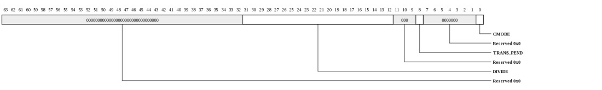
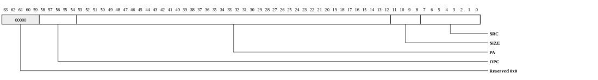
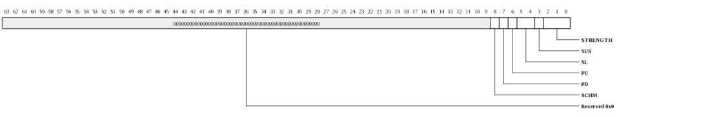
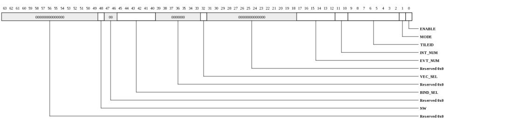

Register Summary
| Address | Register | Protection
| 0000-ffffffffff | GPIO_MMIO_ADDRESS_SPACE | 0000 | GPIO_DEV_INFO | 0008 | GPIO_DEV_CTL | 2 | 0010 | GPIO_MMIO_INFO | 0018 | GPIO_MEM_INFO | 0020 | GPIO_SCRATCHPAD | 0028 | GPIO_SEMAPHORE0 | 0030 | GPIO_SEMAPHORE1 | 1 | 0038 | GPIO_CLOCK_COUNT | 0100 | GPIO_GCLK_MODE | 2 | 0200 | GPIO_MMIO_INIT_CTL | 2 | 0208 | GPIO_MMIO_INIT_DAT | 2 | 0208 | GPIO_MMIO_INIT_DAT_0 | 2 | 0208 | GPIO_MMIO_INIT_DAT_1 | 2 | 0600 | GPIO_MMIO_ERROR_INFO | 0700-08ff | GPIO_PAD_CONTROL | 2 | 1000 | GPIO_PIN_STATE | 1008 | GPIO_PIN_RELEASE | 1010 | GPIO_PIN_PULSE_SET | 1018 | GPIO_PIN_PULSE_CLR | 1020 | GPIO_PIN_SET | 1028 | GPIO_PIN_CLR | 1040 | GPIO_PIN_DIR_I | 1 | 1048 | GPIO_PIN_DIR_O | 1 | 1050 | GPIO_PIN_OUTPUT_TGL | 1058 | GPIO_PIN_OUTPUT_INV | 1060 | GPIO_PIN_OUTPUT_MSK | 1070 | GPIO_PIN_INPUT_SYNC | 1088 | GPIO_PIN_INPUT_INV | 1090 | GPIO_PIN_INPUT_MSK | 1098 | GPIO_PIN_INPUT_CND | 3000 | GPIO_INT_VEC0_W1TC | 3008 | GPIO_INT_VEC0_RTC | 3010 | GPIO_INT_VEC1_W1TC | 3018 | GPIO_INT_VEC1_RTC | 3100 | GPIO_INT_BIND | 2 | |
|---|
General Address Space Definitions
MMIO Address Space (GPIO_MMIO_ADDRESS_SPACE: 0x0000-0xffffffffff)
The MMIO physical address space for the USB is described below. This is a general description of the MMIO space as opposed to a register description| Bits | Name | Type | Reset | Description
| 39:37 | SVC_DOM | RW | 0 | This field of the address indexes the 8 entry service domain table. | 15:0 | OFFSET | RW | 0 | This field of the address provides an offset into the region being accessed. | |
|---|
Register Definitions
Device Info (GPIO_DEV_INFO: 0x0000)
This register provides general information about the device attached to this port and channel.
| Bits | Name | Type | Reset | Description
| 35:32 | INSTANCE | RO | HW | Instance ID for multi-instantiated devices. | 27:24 | REGISTER_REV | RO | 0 | Register format architectural revision. | 23:16 | DEVICE_REV | RO | HW | Device revision ID. | 11:0 | TYPE | RO | 020h | Encoded device Type - 32 to indicate GPIO |
|
|---|
Device Control (GPIO_DEV_CTL: 0x0008)
This register provides general device control.This register is protected at level 2

| Bits | Name | Type | Reset | Description
| 3 | SDN_ROUTE_ORDER | RW | 0 | When 1, packets sent on the SDN will be routed x-first. When 0, packets will be routed y-first. This setting must match the setting in the Tiles. Devices may have additional interfaces with customized route-order settings used in addition to or instead of this field. | 2 | RDN_ROUTE_ORDER | RW | 1 | When 1, packets sent on the RDN will be routed x-first. When 0, packets will be routed y-first. This setting must match the setting in the Tiles. Devices may have additional interfaces with customized route-order settings used in addition to or instead of this field. | |
|---|
MMIO Info (GPIO_MMIO_INFO: 0x0010)
This register provides information about how the physical address is interpreted by the IO device. The PA is divided into {CHANNEL,SVC_DOM,IGNORED,REGION,OFFSET}. The values in this register define the size of each of these fields.
| Bits | Name | Type | Reset | Description
| 40:35 | REGION_WIDTH | RO | 0 | Size of the REGION field for this channel. The LSBs of the physical address are interpreted as {REGION,OFFSET} | 34:29 | OFFSET_WIDTH | RO | 16 | Size of the OFFSET field for this channel. The LSBs of the physical address are interpreted as {REGION,OFFSET} | 28:22 | NUM_SVC_DOM | RO | 8 | Number of service domains associated with this channel. | 21:19 | SVC_DOM_WIDTH | RO | 3 | Number of bits of service-domain specifier for this channel. The MSBs of the physical addrress are interpreted as {channel, service-domain} | 18:4 | NUM_CH | RO | 1 | Number of channels associated with this IO port. | 3:0 | CH_WIDTH | RO | 0 | Number of bits of channel specifier for all channels. The MSBs of the physical addrress are interpreted as {channel, service-domain} | |
|---|
Memory Info (GPIO_MEM_INFO: 0x0018)
This register provides information about memory setup required for this device.
| Bits | Name | Type | Reset | Description
| 55:48 | NUM_TLB_ENT | RO | 0 | Number of IO TLB entries per ASID. | 47:40 | NUM_ASIDS | RO | 0 | Number of ASIDS supported if this device has an IO TLB (otherwise this field is zero). | 35:32 | NUM_HFH_TBL | RO | 0 | Number of hash-for-home tables that must be configured for this channel. | 31:0 | REQ_PORTS | RO | 32768 | Each bit represents a request (QDN) port on the tile fabric. Bit[15] represents the QDN port used for device configuration and is always set for devices implemented on channel-0. Bit[14] is the first port clockwise from the port used to access configuration space. Bit[13] is the second port in the clockwise direction. Bit[16] is the first port counter-clockwise from the port used to access configuration space. When a bit is set, the device has a QDN port at the associated location. For devices using a nonzero channel, this register may return all zeros. | |
|---|
Scratchpad (GPIO_SCRATCHPAD: 0x0020)
Scratchpad
| Bits | Name | Type | Reset | Description
| 63:0 | SCRATCHPAD | RW | 0 | Scratchpad | |
|---|
Semaphore0 (GPIO_SEMAPHORE0: 0x0028)
Semaphore
| Bits | Name | Type | Reset | Description
| 0 | VAL | RW | 0 | When read, the current semaphore value is returned and the semaphore is set to 1. Bit can also be written to 1 or 0. | |
|---|
Semaphore1 (GPIO_SEMAPHORE1: 0x0030)
SemaphoreThis register is protected at level 1

| Bits | Name | Type | Reset | Description
| 0 | VAL | RW | 0 | When read, the current semaphore value is returned and the semaphore is set to 1. Bit can also be written to 1 or 0. | |
|---|
Clock Count (GPIO_CLOCK_COUNT: 0x0038)
Clock Count| Bits | Name | Type | Reset | Description
| 15:1 | COUNT | RO | 0 | Indicates the number of core clocks that were counted during 1000 device clock periods. Result is accurate to within +/-1 core clock periods. | 0 | RUN | RW | 0 | When 1, the counter is running. Cleared by HW once count is complete. When written with a 1, the count sequence is restarted. Counter runs automatically after reset. Software must poll until this bit is zero, then read the CLOCK_COUNT register again to get the final COUNT value. | |
|---|
GPIO Clock Mode (GPIO_GCLK_MODE: 0x0100)
GPIO Clock ModeThis register is protected at level 2

| Bits | Name | Type | Reset | Description
| 31:12 | DIVIDE | RW | 0 | Number of extra gclk cycles per IO drive/sample cycle. 0 indicates drive/sample every cycle. 1 indicates 1 extra cycle so 2 gclks per drive/sample etc. | 8 | TRANS_PEND | RO | 0 | clock mux transition pending | 0 | CMODE | RW | 0 | Clock source for the GPIO interface. |
|
|---|
MMIO Service Domain Configuration (GPIO_MMIO_INIT_CTL: 0x0200)
Initialization control for the MMIO service domain tableThis register is protected at level 2
| Bits | Name | Type | Reset | Description
| 3:0 | IDX | RW | 0 | Index into service domain table. | |
|---|
MMIO service domain table data (GPIO_MMIO_INIT_DAT: 0x0208)
Read/Write data for the service domain table. Each time this register is read or written, MMIO_INIT_CTL.IDX is incremented.This register is protected at level 2

| Bits | Name | Type | Reset | Description
| 63:0 | DAT | RO | 0 | Service domain table data. Contents may be either MMIO_INIT_DAT_0 or MMIO_INIT_DAT_1, depending on the IDX value in MMIO_INIT_CTL. | |
|---|
MMIO service domain table data - low word (GPIO_MMIO_INIT_DAT_0: 0x0208)
Read/Write data for the service domain table. Each time this register is read or written, MMIO_INIT_CTL.IDX is incremented. Each entry consists of two words, addressed by MMIO_INIT_CTL.IDX[0]. Each bit in an entry corresponds to a service or set of services. A set bit allows access to that service for MMIO accesses that address this service domain table entry.This register is protected at level 2
| Bits | Name | Type | Reset | Description
| 63:0 | PIN_ENABLE | RW | 0 | A set bit allows access to the corresponding GPIO pin. If access is disabled, the pin will read as 0 and no transitions will be detected. All output or drive enable to a disabled pin will be ignored. | |
|---|
MMIO service domain table data - high word (GPIO_MMIO_INIT_DAT_1: 0x0208)
Read/Write data for the service domain table. Each time this register is read or written, MMIO_INIT_CTL.IDX is incremented. Each entry consists of two words, addressed by MMIO_INIT_CTL.IDX[0]. Each bit in an entry corresponds to a service or set of services. A set bit allows access to that service for MMIO accesses that address this service domain table entry.This register is protected at level 2
| Bits | Name | Type | Reset | Description
| 2:0 | CFG_PROT_LEVEL | RW | 3 | This field indicates the maximum protection level allowed for configuration access. 2/3 allows access to all registers. 1 blocks access to level 2. 0 blocks access to levels 1 and 2. | |
|---|
MMIO Error Information (GPIO_MMIO_ERROR_INFO: 0x0600)
Provides diagnostics information when an MMIO error occurs. Captured whenever the MMIO_ERR interrupt condition occurs
| Bits | Name | Type | Reset | Description
| 58:54 | OPC | RO | 0 | Opcode of request. MMIO supports only MMIO_READ (0x0e) and MMIO_WRITE (0x0f). All others are reserved and will only occur on a misconfigured TLB. | 53:12 | PA | RO | 0 | Full PA from request. | 11:8 | SIZE | RO | 0 | Encoded request size. 0=1B, 1=2B, 2=4B, 3=8B, 4=16B, 5=32B, 6=48B, 7=64B. MMIO operations to GPIO must always be 8 bytes. | 7:0 | SRC | RO | 0 | Source Tile in {x[3:0],y[3:0]} format. | |
|---|
Pad Electrical Controls (GPIO_PAD_CONTROL: 0x0700-0x08ff)
Pad Electrical ControlsThis register is protected at level 2

| Bits | Name | Type | Reset | Description
| 8 | SCHM | RW | 0 | Schmitt trigger select | 0: no Schmitt trigger 1: Schmitt trigger 7 | PD | RW | 0 | 1: enable pull-down resistor | 6 | PU | RW | 0 | 1: enable pull-up resistor | 5:4 | SL | RW | 0 | Slew rate control | 00 = slowest 11 = fastest 3 | SUS | RW | 0 | 1: Enable sustain (keeper), requires about 100 uA to flip the state | 0: no keeper 2:0 | STRENGTH | RW | 3 | Drive strength. | 0 = tristate 1 = 2 ma 2 = 4 ma 3 = 6 ma 4 = 8 ma 5 = 10 ma 6 = 12 ma 7 = RESERVED |
|---|
Pin State (GPIO_PIN_STATE: 0x1000)
Pin State
| Bits | Name | Type | Reset | Description
| 63:0 | STATE | RW | 0 | When read, returns the pin state after conditional inversion controlled by PIN_INPUT_INV for all enabled pins and 0 for all disabled pins. Pins are enabled for read if the bit is set in SVC_DOM PIN_ENABLE field and clear in the PIN_INPUT_MSK. When written, the value will be modified by PIN_OUTPUT_INV and will be driven on the enabled output pins. Pins are enabled for output if the SVC_DOM PIN_ENABLE field is set, PIN_DIR_O is set, and the PIN_OUTPUT_MSK is clear. | |
|---|
Pin Release (GPIO_PIN_RELEASE: 0x1008)
Pin Release| Bits | Name | Type | Reset | Description
| 63:0 | REL | WO | 0 | Writing a 1 to a bit will disable the output driver for enabled pins. | |
|---|
Pin Pulse Set (GPIO_PIN_PULSE_SET: 0x1010)
Pin Pulse Set| Bits | Name | Type | Reset | Description
| 63:0 | PULSE_SET | WO | 0 | Writing a 1 to a bit will assert the output pin for a single time slice. Pins configured as outputs will return to the previous output drive state and drive value after 1 time slice. | |
|---|
Pin Pulse Clear (GPIO_PIN_PULSE_CLR: 0x1018)
Pin Pulse Clear| Bits | Name | Type | Reset | Description
| 63:0 | PULSE_CLR | WO | 0 | Writing a 1 to a bit will deassert the output pin for a single time slice. Pins configured as outputs will return to the previous output drive state and drive value after 1 time slice. | |
|---|
Pin Set (GPIO_PIN_SET: 0x1020)
Pin Set| Bits | Name | Type | Reset | Description
| 63:0 | SET | WO | 0 | Writing a 1 to a bit will assert the output pin. Pin will remain asserted until a new value is supplied or RELEASE. | |
|---|
Pin Clr (GPIO_PIN_CLR: 0x1028)
Pin Clr| Bits | Name | Type | Reset | Description
| 63:0 | CLR | WO | 0 | Writing a 1 to a bit will deassert the output pin. Pin will remain deasserted until a new value is supplied or RELEASE. | |
|---|
Pin Direction Input (GPIO_PIN_DIR_I: 0x1040)
Pin Direction InputThis register is protected at level 1
| Bits | Name | Type | Reset | Description
| 63:0 | I | RW | 0 | Pin n direction is controlled by PIN_DIR_O[n] and PIN_DIR_I[n], encoded as: | 00b=Disabled 01b=Input mode. Disable the output driver 10b=Output mode. Drive pin to logic level specified by data assertion state and output inversion. When the pin is released, then the output will be tristated 11b=Open-drain mode. Drive low on pin when state is asserted, and disable driver when state is deasserted |
|---|
Pin Direction Output (GPIO_PIN_DIR_O: 0x1048)
Pin Direction OutputThis register is protected at level 1
| Bits | Name | Type | Reset | Description
| 63:0 | O | RW | 0 | Pin n direction is controlled by PIN_DIR_O[n] and PIN_DIR_I[0], encoded as: | 00b=Disabled 01b=Input mode. Disable the output driver 10b=Output mode. Drive pin to logic level specified by data assertion state and output inversion. When the pin is released, then the output will be tristated 11b=Open-drain mode. Drive low on pin when state is asserted, and disable driver when state is deasserted |
|---|
Output Toggle (GPIO_PIN_OUTPUT_TGL: 0x1050)
Output Toggle| Bits | Name | Type | Reset | Description
| 63:0 | TGL | WO | 0 | Each bit corresponds to a GPIO pin. When the bit is written with 0 the pin output data will be unchanged. When the bit is written with 1, the pin output data will toggled. TGL changes the assertion state of the data, which is then modified by INV to determine pin logic levels. | |
|---|
Output Inversion Mode (GPIO_PIN_OUTPUT_INV: 0x1058)
Output Inversion Mode| Bits | Name | Type | Reset | Description
| 63:0 | INV | RW | 0 | Each bit corresponds to a GPIO pin. When 0 an asserted pin will correspond to a high logic level, and when 1 an asserted pin will correspond to a low logic level. This bit affects only the output inversion; input inversion is specified by PIN_INPUT_INV. | |
|---|
Output Mask (GPIO_PIN_OUTPUT_MSK: 0x1060)
Output Mask
| Bits | Name | Type | Reset | Description
| 63:0 | MSK | RW | 0 | Each bit corresponds to a GPIO pin. When the bit is 0 then writes to PIN_STATE register for this bit will be processed normally. When the bit is 1, writes to the PIN_STATE register for this bit will be ignored and the drive level will not be modified. | |
|---|
Input Sync Mode (GPIO_PIN_INPUT_SYNC: 0x1070)
Input Sync Mode| Bits | Name | Type | Reset | Description
| 63:0 | SYNC | RW | 0 | Each bit corresponds to a GPIO pin. When 0, the input pin value is sampled directly. When 1, the input pin is synchronized through a double-rank synchronizer to prevent metastable data. | |
|---|
Input Inversion Mode (GPIO_PIN_INPUT_INV: 0x1088)
Input Inversion Mode
| Bits | Name | Type | Reset | Description
| 63:0 | INV | RW | 0 | Each bit corresponds to a GPIO pin. When 0, the input value read is 1 when the pin logic level is high. When 1, the input value read is 1 when the pin logic level is low. The interrupt detection logic also receives the conditionally inverted input value. | |
|---|
Input Mask (GPIO_PIN_INPUT_MSK: 0x1090)
Input Mask| Bits | Name | Type | Reset | Description
| 63:0 | MSK | RW | 0 | Each bit corresponds to a GPIO pin. When 0, reads of the PIN_STATE will return the input data for this pin. When 1, reads of the PIN_STATE register will return 0. | |
|---|
Input Mask Condition (GPIO_PIN_INPUT_CND: 0x1098)
Input Mask Condition| Bits | Name | Type | Reset | Description
| 63:0 | CND | RW | 0 | Each bit corresponds to a GPIO pin. When 0, the GPIO value is sampled even when being driven as an output. When 1, the GPIO value is only sampled if the pin is configured as an input or an open-drain that is not currently being driven. This filter applies to interrupts as well. | |
|---|
Interrupt vector-0, write-one-to-clear (GPIO_INT_VEC0_W1TC: 0x3000)
Interrupt status vector with write-one-to-clear functionality. Provides access to the same status bits that are visible in INT_VEC0_RTC. This vector contains the interrupts associated with the 64 pin assertion interrupts. Writing a 1 clears the status bit. Accesses to this register are masked by the SVC_DOM PIN ENABLE field. If the PIN ENABLE bit is 0, the read bit will be zero and the written bit will be ignored.| Bits | Name | Type | Reset | Description
| 63:0 | INT_VEC0_W1TC | RW | 0 | Interrupt status vector with write-one-to-clear functionality. Provides access to the same status bits that are visible in INT_VEC0_RTC. This vector contains the interrupts associated with the 64 pin assertion interrupts. Writing a 1 clears the status bit. Accesses to this register are masked by the SVC_DOM PIN ENABLE field. If the PIN ENABLE bit is 0, the read bit will be zero and the written bit will be ignored. | |
|---|
Interrupt vector-0, read-to-clear (GPIO_INT_VEC0_RTC: 0x3008)
Interrupt status vector with read-to-clear functionality. Provides access to the same status bits that are visible in INT_VEC0_W1TC. This vector contains the interrupts associated with the 64 pin assertion interrupts. Reading this register clears all of the associated interrupts. Accesses to this register are masked by the SVC_DOM PIN ENABLE field. If the PIN ENABLE bit is 0, the read bit will be zero and the interrupt status will not be modified.| Bits | Name | Type | Reset | Description
| 63:0 | INT_VEC0_RTC | RO | 0 | Interrupt status vector with read-to-clear functionality. Provides access to the same status bits that are visible in INT_VEC0_W1TC. This vector contains the interrupts associated with the 64 pin assertion interrupts. Reading this register clears all of the associated interrupts. Accesses to this register are masked by the SVC_DOM PIN ENABLE field. If the PIN ENABLE bit is 0, the read bit will be zero and the interrupt status will not be modified. | |
|---|
Interrupt vector-1, write-one-to-clear (GPIO_INT_VEC1_W1TC: 0x3010)
Interrupt status vector with write-one-to-clear functionality. Provides access to the same status bits that are visible in INT_VEC1_RTC. This vector contains the interrupts associated with the 64 pin deassertion interrupts. Writing a 1 clears the status bit. Accesses to this register are masked by the SVC_DOM PIN ENABLE field. If the PIN ENABLE bit is 0, the read bit will be zero and the written bit will be ignored.| Bits | Name | Type | Reset | Description
| 63:0 | INT_VEC1_W1TC | RW | 0 | Interrupt status vector with write-one-to-clear functionality. Provides access to the same status bits that are visible in INT_VEC1_RTC. This vector contains the interrupts associated with the 64 pin deassertion interrupts. Writing a 1 clears the status bit. Accesses to this register are masked by the SVC_DOM PIN ENABLE field. If the PIN ENABLE bit is 0, the read bit will be zero and the written bit will be ignored. | |
|---|
Interrupt vector-1, read-to-clear (GPIO_INT_VEC1_RTC: 0x3018)
Interrupt status vector with read-to-clear functionality. Provides access to the same status bits that are visible in INT_VEC1_W1TC. This vector contains the interrupts associated with the 64 pin deassertion interrupts. Reading this register clears all of the associated interrupts. Accesses to this register are masked by the SVC_DOM PIN ENABLE field. If the PIN ENABLE bit is 0, the read bit will be zero and the interrupt status will not be modified.
| Bits | Name | Type | Reset | Description
| 63:0 | INT_VEC1_RTC | RO | 0 | Interrupt status vector with read-to-clear functionality. Provides access to the same status bits that are visible in INT_VEC1_W1TC. This vector contains the interrupts associated with the 64 pin deassertion interrupts. Reading this register clears all of the associated interrupts. Accesses to this register are masked by the SVC_DOM PIN ENABLE field. If the PIN ENABLE bit is 0, the read bit will be zero and the interrupt status will not be modified. | |
|---|
Bindings for interrupt vectors (GPIO_INT_BIND: 0x3100)
This register provides read/write access to all of the interrupt bindings for the GPIO controller. The VEC_SEL field is used to select the vector being configured and the BIND_SEL selects the interrupt within the vector.This register is protected at level 2

| Bits | Name | Type | Reset | Description
| 48 | NW | WO | 0 | When written with a 1, the interrupt binding data will not be modified. Set this when writing the VEC_SEL and BIND_SEL fields in preparation for a read. | 45:40 | BIND_SEL | RW | HW | Selects binding within the vector selected by VEC_SEL. | 32 | VEC_SEL | RW | 0 | Selects vector whose bindings are to be accessed. |
17:12 | EVT_NUM | RW | HW | Event number to be delivered to Tile | 11:10 | INT_NUM | RW | HW | Interrupt number to be delivered to Tile | 9:2 | TILEID | RW | HW | Tile targeted for this interrupt in {x[3:0],y[3:0]} format. | 1 | MODE | RW | 0 | When 1, interrupt will be dispatched each time it occurs. When 0, the interrupt is only sent if the status bit is clear. | 0 | ENABLE | RW | 0 | Enable the interrupt. When 0, the interrupt won't be dispatched, however the STATUS bit will continue to be updated. | |
|---|
Copyright © 2014 Tilera® Corporation. All rights reserved. Printed in the United States of America.
No part of this book may be reproduced, stored in a retrieval system, or transmitted in any form or by any means, electronic, mechanical, photocopying, recording, or otherwise, except as may be expressly permitted by the applicable copyright statutes or in writing by the Publisher.
The following are registered trademarks of Tilera Corporation: Tilera and the Tilera logo. The following are trademarks of Tilera Corporation: Embedding Multicore, The Multicore Company, Tile Processor, TILE Architecture, TILE64, TILEPro, TILEPro36, TILEPro64, TILExpress, TILExpress-64, TILExpressPro-64, TILExpress-20G, TILExpressPro-20G, TILExpressPro-22G, iMesh, TileDirect, TILEmpower, TILEmpower-Gx, TILEncore, TILEncorePro, TILEncore-Gx, TILE-Gx, TILE-Gx16, TILE-Gx36, TILE-Gx64, TILE-Gx100, TILE-Gx3000, TILE-Gx5000, TILE-Gx8000, DDC (Dynamic Distributed Cache), Multicore Development Environment, Gentle Slope Programming, iLib, TMC (Tilera Multicore Components), hardwall, Zero Overhead Linux (ZOL), MiCA (Multicore iMesh Coprocessing Accelerator), and mPIPE (multicore Programmable Intelligent Packet Engine). All other trademarks and/or registered trademarks are the property of their respective owners.
Third-party software: The Tilera IDE makes use of the BeanShell scripting library. Source code for the BeanShell library can be found at the BeanShell website (http://www.beanshell.org/developer.html).
The following is a trademark of Marvell Semiconductor, Inc.: Distributed Switching Architecture (DSA).
This document contains advance information on Tilera products that are in development, sampling or initial production phases. This information and specifications contained herein are subject to change without notice at the discretion of Tilera Corporation.
No license, express or implied by estoppels or otherwise, to any intellectual property is granted by this document. Tilera disclaims any express or implied warranty relating to the sale and/or use of Tilera products, including liability or warranties relating to fitness for a particular purpose, merchantability or infringement of any patent, copyright or other intellectual property right.
Products described in this document are NOT intended for use in medical, life support, or other hazardous uses where malfunction could result in death or bodily injury.
THE INFORMATION CONTAINED IN THIS DOCUMENT IS PROVIDED ON AN "AS IS" BASIS. Tilera assumes no liability for damages arising directly or indirectly from any use of the information contained in this document.